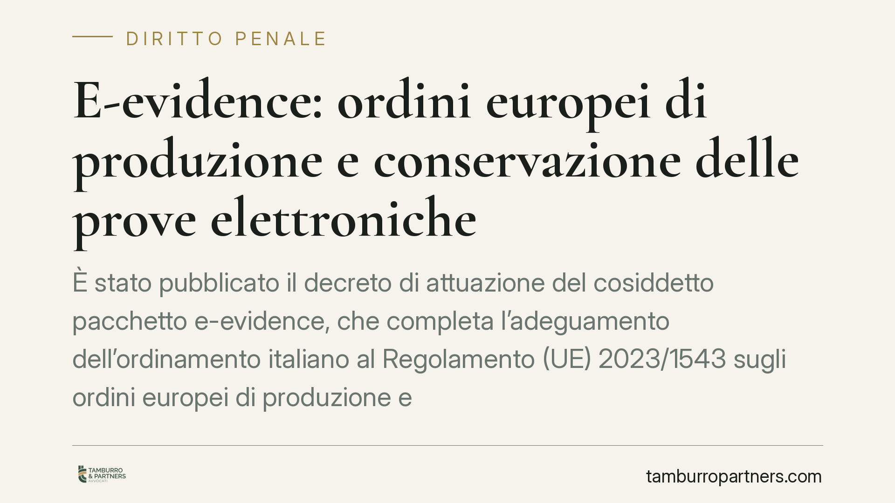

E-evidence: ordini europei di produzione e conservazione delle prove elettroniche
È stato pubblicato il decreto di attuazione del cosiddetto pacchetto e-evidence, che completa l'adeguamento dell'ordinamento italiano al Regolamento (UE) 2023/1543 sugli ordini europei di produzione e conservazione delle prove elettroniche nei procedimenti penali. Il quadro introduce procedure dirette tra autorità e prestatori di servizi e una cornice sanzionatoria significativa. Vediamo cosa cambia per imprese tecnologiche e professionisti.

Il contesto: dalla rogatoria all'accesso diretto
Fino a oggi, acquisire una prova elettronica detenuta da un prestatore stabilito in un altro Stato membro — i dati di un account di posta, i log di accesso a una piattaforma, i contenuti archiviati su un server — passava per la cooperazione giudiziaria tradizionale: ordine europeo di indagine o, nei casi residui, rogatoria internazionale. Strumenti lenti, mal adatti a dati volatili che possono essere cancellati in pochi giorni.
Il pacchetto e-evidence ribalta l'impostazione. Il Regolamento (UE) 2023/1543 consente all'autorità giudiziaria di uno Stato membro di rivolgersi direttamente al prestatore di servizi che offre i propri servizi nell'Unione, a prescindere dal luogo di stabilimento o di archiviazione dei dati. Il prestatore diventa così destinatario di un ordine vincolante, senza passaggio obbligato per l'autorità dello Stato in cui ha sede.
Inquadramento normativo
Il Regolamento (UE) 2023/1543 prevede due strumenti distinti:
- l'ordine europeo di produzione (EPO), accompagnato dal relativo certificato EPOC, con cui si chiede la trasmissione effettiva dei dati;
- l'ordine europeo di conservazione (EPO-PR), accompagnato dal certificato EPOC-PR, con cui si chiede di "congelare" i dati esistenti in attesa di una successiva richiesta di produzione.
In breve: l'ordine è l'atto dell'autorità; il certificato (EPOC o EPOC-PR) è il documento standardizzato che viene notificato al prestatore.
Il Regolamento gradua i poteri in base alla natura del dato. Per i dati relativi agli abbonati e per i dati richiesti al solo scopo di identificare l'utente, l'intervento è meno invasivo. Per i dati di traffico e, soprattutto, per i dati di contenuto — i più sensibili — sono previste garanzie rafforzate, tra cui, di regola, l'emissione o la convalida da parte di un giudice. La precisa ripartizione di competenza tra pubblico ministero e giudice e le soglie fissate dal decreto italiano di attuazione vanno verificate sul testo definitivo pubblicato.
I termini di adempimento
Un profilo centrale, spesso sottovalutato, riguarda i tempi. Il Regolamento impone al prestatore di trasmettere i dati entro dieci giorni dalla ricezione del certificato di produzione. Nei casi di emergenza — situazioni di pericolo imminente per la vita o l'incolumità delle persone — il termine si contrae a otto ore. Sono finestre operative strette, che presuppongono procedure interne già pronte prima di ricevere il primo ordine.
La cornice sanzionatoria
L'art. 15 del Regolamento (UE) 2023/1543 rimette agli Stati membri la fissazione delle sanzioni per l'inadempimento degli obblighi, stabilendo che possano arrivare fino al 2% del fatturato mondiale totale annuo del prestatore. È lo stesso modello già noto dal GDPR: sanzione parametrata al fatturato, pensata per incidere anche sui grandi operatori globali.
L'eventuale tetto in valore assoluto (in euro) e la concreta misura prevista dal decreto di attuazione italiano sono dati che vanno confermati sul testo normativo pubblicato in Gazzetta Ufficiale, poiché il Regolamento non fissa direttamente un importo massimo in euro.
Implicazioni pratiche
Il destinatario tipico non è solo la grande piattaforma. È destinatario degli obblighi ogni prestatore di servizi che offra servizi di comunicazione elettronica, di hosting, di registrazione di domini o di servizi internet nell'Unione: provider di posta, gestori di piattaforme cloud, operatori di messaggistica, società di servizi IT.
Per queste realtà la novità è duplice. Da un lato, dovranno saper riconoscere e validare un ordine ricevuto da un'autorità di un altro Stato membro, distinguendo i casi di legittimo rifiuto o di contestazione. Dall'altro, dovranno rispettare termini brevissimi senza compromettere i diritti degli utenti e la riservatezza dei dati non pertinenti.
Cosa fare in concreto
- Nomina il rappresentante o il punto di contatto richiesto dal Regolamento per la ricezione degli ordini e verifica che i recapiti siano aggiornati e presidiati.
- Predisponi una procedura interna di gestione degli ordini che scandisca ricezione, validazione giuridica, estrazione del dato e risposta entro i termini di dieci giorni e otto ore.
- Mappa i dati trattati distinguendo dati relativi agli abbonati, di traffico e di contenuto, così da sapere in anticipo quali garanzie e quali competenze si applicano a ciascuna categoria.
- Definisci i motivi di rifiuto e la procedura di contestazione, documentando ogni decisione per ragioni di responsabilità.
- Forma il personale tecnico e legale coinvolto, perché i tempi di risposta non consentono improvvisazione.
La materia è in evoluzione e richiede un riscontro puntuale sul testo del decreto di attuazione, in particolare per numerazione, data di pubblicazione, soglie e misura delle sanzioni.
Disclaimer
Contributo informativo a cura di Tamburro & Partners - Avv. Giuseppe Tamburro. Non costituisce parere legale.
Ogni condominio ha una storia a sé.
Se gestisci un'amministrazione e vuoi un confronto su una specifica questione condominiale, scrivi allo studio. Ti rispondiamo entro un giorno lavorativo.